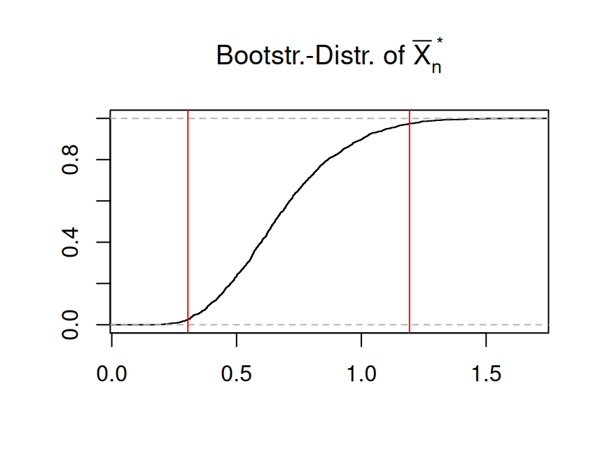
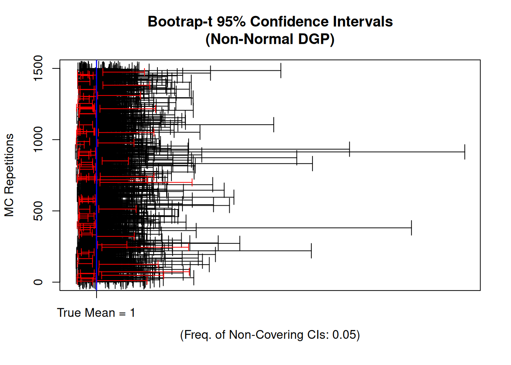

observedSample <- c(5.20, 4.80, 5.30, 4.60,
6.10, 5.40, 5.80, 5.50)
myecdf_fun <- ecdf(observedSample)
plot(myecdf_fun, main="")## Note: ecdf() returns a function!
myecdf_fun(5.0)[1] 0.25The bootstrap is an important tool of modern statistical analysis. It establishes a general framework for simulation-based statistical inference. In simple situations the uncertainty of an estimate may be gauged by analytical calculations (asymptotic statistics) leading, for example, to the construction of (approximate) confidence intervals. The bootstrap replaces complicated and often inaccurate approximations to biases, variances and other measures of uncertainty by computer simulations.
Some literature:
The bootstrap method is attributed to Bradley Efron, who received the International Prize in Statistics (the Nobel price of statistics) for his seminal works on the bootstrap method.
Suppose that we wish to invest a fixed sum of money in two financial assets that yield returns of \(X\) and \(Y.\) These returns \(X\) and \(Y\) are random with
We want to invest a fraction \(\alpha\in(0,1)\) in \(X\) and invest the remaining \(1-\alpha\) in \(Y.\)
Our aim is to minimize the variance (risk) of our investment, i.e., we want to minimize \[ Var\left(\alpha X + (1-\alpha)Y\right). \] One can show that the value \(\alpha\) that minimizes this variance is \[ \alpha = \frac{\sigma^2_Y - \sigma_{XY}}{\sigma^2_X + \sigma^2_Y - 2\sigma_{XY}}. \tag{1}\] Using a data set that contains past measurements \[ ((X_1,Y_1),\dots,(X_n,Y_n)) \] for \(X\) and \(Y,\) we can estimate the unknown \(\alpha\) by plugging in estimates of the variances and covariances \[ \hat\alpha = \frac{\hat\sigma^2_Y - \hat\sigma_{XY}}{\hat\sigma^2_X + \hat\sigma^2_Y - 2\hat\sigma_{XY}} \tag{2}\] with \[ \begin{align*} \hat{\sigma}^2_X&=\frac{1}{n}\sum_{i=1}^n\left(X_i-\bar{X}\right)^2\\ \hat{\sigma}^2_Y&=\frac{1}{n}\sum_{i=1}^n\left(Y_i-\bar{Y}\right)^2\\ \hat{\sigma}_{XY}&=\frac{1}{n}\sum_{i=1}^n\left(X_i-\bar{X}\right)\left(Y_i-\bar{Y}\right), \end{align*} \] where \(\bar{X}=\frac{1}{n}\sum_{i=1}^nX_i\) and \(\bar{Y}=\frac{1}{n}\sum_{i=1}^nY_i.\)
It is natural to wish to quantify the accuracy of our estimator \[ \hat\alpha\approx \alpha. \]
For instance, to construct a confidence interval we need to know the standard error of the estimator \(\hat\alpha\), \[ \sqrt{Var(\hat\alpha)} = \operatorname{SE}(\hat\alpha)=? \] However, computing \(\operatorname{SE}(\hat\alpha)\) is here difficult due to the definition of \(\hat\alpha\) in Equation 2 which contains variance estimates also in the denominator.
In such cases, we are happy to use the Bootstrap which allows us to approximate \(\operatorname{SE}(\hat\alpha)\) simply by resampling from the data.
Moreover, specific versions of the Bootstrap are found to be more accurate than standard asymptotic theory results.
The distribution of a real-valued random variable \(X\) can be completely described by its distribution function \[ F(x)=P(X\leq x)\quad \text{for all } x\in\mathbb{R}. \]
For given data, the sample analogue of \(F\) is the so-called empirical distribution function, which is an important tool of statistical inference.
Data: i.i.d. random sample \(X_1,\dots,X_n\) from \(X\sim F\)
Let \(1_{(\cdot)}\) denote the indicator function, i.e., \[ 1_{(x\leq t)}=\left\{ \begin{array} 1 & \quad\text{if}\; x\leq t\\ 0 & \quad\text{if}\; x>t. \end{array} \right. \]
Properties:
The empirical distribution funciton \(F_n\) is the distribution function (Definition 1) of the discrete random variable \(X^*,\) where
and
Thus
\[ F_n(x) = \mathbb{P}\left(X^*\leq x\right)=\frac{1}{n} \sum_{i=1}^n 1_{(X_i\leq x)} \]
\(F_n(x)\) depends on the i.i.d. random sample \(X_1,\dots,X_n\) and thus is itself a random function.
We obtain \[ nF_n(x)\sim B(n, p=F(x))\quad x\in\mathbb{R} \]
I.e., \(nF_n(x)\) has a binomial distribution with parameters \(n\) (“number of trials”) and \(p=F(x)\) (“probability of success on a single trial”).
Thus, \[ \begin{align*} \mathbb{E}(nF_n(x))& = np = nF(x)\\[2ex] \Rightarrow \quad \mathbb{E}(F_n(x))& = p = F(x)\\[2ex] \Rightarrow \quad \operatorname{Bias}(F_n(x))& = \mathbb{E}(F_n(x)) - F(x) =0\\ \end{align*} \] and \[ \begin{align*} Var(nF_n(x))& = np(1-p) = nF(x)(1-F(x))\\[2ex] \Rightarrow \quad Var(F_n(x))& = \frac{nF(x)(1-F(x))}{n^2}=\frac{F(x)(1-F(x))}{n} \end{align*} \] such that \[ \begin{align*} \operatorname{MSE}(F_n(x)) & = (\operatorname{Bias}(F_n(x)))^2 + Var(F_n(x))\\[2ex] & =\frac{F(x)(1-F(x))}{n}. \end{align*} \]
This allows us to conclude that \[ \begin{align*} F_n(x) & \to_{m.s.} F(x)\quad\text{as}\quad n\to\infty\\[2ex] \Rightarrow \quad F_n(x) & \to_{p} F(x)\quad\text{as}\quad n\to\infty. \end{align*} \]
That is, \(F_n(x)\) is point-wise for each \(x\in\mathbb{R}\) a weakly consistent estimator of \(F(x).\)
The Clivenko-Cantelli Theorem 1 states that \(F_n\) is even uniformly over \(\mathbb{R}\) a consistent estimator of \(F.\)
The basic idea of the bootstrap is to replace random sampling from the true (unknown) population \(F\) (infeasible Monte Carlo simulation) by random sampling from the empirical distribution \(F_n\) (feasible Monte Carlo simulation).
Sampling from the population distribution \(F\) (infeasible Monte Carlo simulation)
The random sample \(X_1,\dots,X_n\overset{\text{i.i.d.}}{\sim}F\) is generated by drawing observations independently and with replacement from the unknown population distribution function \(F\). That is, for each interval \([a,b]\) the probability of drawing an observation in \([a,b]\) is given by \[
P(X\in [a,b])=F(b)-F(a).
\] Let \(\theta_0\) denote a distribution parameter of \(F\) which we want to estimate, and let \(\hat\theta_n\) denote an estimator of \(\theta_0.\)
If we would know \(F,\) we could generate arbitrarily many realizations of an estimator \(\hat{\theta}_n\) \[
\hat{\theta}_{n,1}, \hat{\theta}_{n,2}, \dots, \hat{\theta}_{n,m}
\] with \(m\to\infty\) and do inference about \(\theta_0\) using these realizations. Unfortunately, we don’t know \(F,\) thus Monte Carlo inference is infeasible.
The idea of the bootstrap is to make the infeasible Monte Carlo inference feasible:
Instead of random sampling from \(F,\) which is infeasible, the bootstrap uses random sampling from the known empirical distribution function \(F_n\) to generate arbitrarily many bootstrap realizations of an estimator \(\hat{\theta}_n\) \[
\hat{\theta}^*_{n,1}, \hat{\theta}^*_{n,2}, \dots, \hat{\theta}^*_{n,m}
\] with \(m\to\infty\) and do inference about \(\theta_0\) using these bootstrap realizations.
This is justified asymptotically since for large \(n,\) the empirical distribution \(F_n\) is “close” to the unknown distribution \(F\) (Glivenko-Cantelli Theorem 1). That is, for \(n\rightarrow\infty\) the relative frequency of observations \(X_i\) in \([a,b]\) converges to \(P(X\in [a,b])\)
\[
\begin{align*}
\underbrace{\frac{1}{n}\sum_{i=1}^n1_{(X_i\in[a,b])}}_{=F_n(b)-F_n(a)}&\to_p \underbrace{P(X\in [a,b])}_{=F(b)-F(a)}
\end{align*}
\]
Setup:
Moreover, for simplicity let us focus on unbiased and \(\sqrt{n}\) consistent estimators, i.e.
Inference: In order to provide standard errors, construct confidence intervals, and to perform tests of hypothesis, we are interested in learning the distribution of \[ \sqrt{n}\left(\hat\theta_n-\theta_0\right)\quad\text{as}\quad n\to\infty, \] i.e. in learning the limit of \[ H_{n}(x)=P\left(\sqrt{n}\left(\hat\theta_n-\theta_0\right)\leq x\right) \] as \(n\to\infty.\)
Of course, we could do asymptotic statistics. For instance, using the Lindeberg-Lévy CLT, we may be able to show that that the limit of \(H_{n}(x)\) is the Normal distribution.
However, deriving a useful, explicit expression of the asymptotic variance of \(\hat{\theta}_n\) can be very hard (see Section 1.1). Then, one is very happy to use the bootstrap instead of doing painful math.
By the Clivenko-Cantelli (Theorem 1) the bootstrap estimators \[
\hat\theta_{n,1}^*,\hat\theta_{n,2}^*,\dots,\hat\theta_{n,m}^*
\] allow us to approximate the bootstrap distribution
\[
H^{Boot}_{n}(x)=P\left(\left.\sqrt{n}\left(\hat\theta^*_n-\hat\theta_n\right)\leq x\right|\mathcal{S}_n\right)
\] arbitrarily well, i.e., \[
\sup_{x}\left|H^{Boot}_{n,m}(x)-H^{Boot}_{n}(x)\right|\to_{a.s} 0\quad\text{as}\quad m\to\infty,
\] where \[
H^{Boot}_{n,m}(x)=\frac{1}{m}\sum_{j=1}^m1_{\left(\sqrt{n}\left(\hat\theta^*_{n,j}-\hat\theta_n\right)\leq x\right)}
\] denotes the empirical distribution function, which we can use to approximate the bootstrap distribution \(H^{Boot}_{n}(x).\)
Since we can choose \(m\) arbitrarily large, we can effectively ignore the approximation error in \(H^{Boot}_{n,m}(x).\) That is, we can treat the bootstrap distribution \(H^{Boot}_{n}(x)\) is known.
The crucial question is, however, whether the feasible bootstrap distribution \[ H^{Boot}_{n}(x)=P\left(\left.\sqrt{n}\left(\hat\theta^*_n-\hat\theta_n\right)\leq x\;\right|\;\mathcal{S}_n\right) \] is able to approximate the unknown distribution \[ H_{n}(x)=P\left(\sqrt{n}\left(\hat\theta_n-\theta_0\right)\leq x\right) \] as \(n\to\infty.\)
The bootstrap does not always work. A necessary condition for the use of the bootstrap is the consistency of the bootstrap approximation.
The bootstrap is called consistent if, for large \(n\), the bootstrap distribution of \(\hat{\theta}^*_n -\hat{\theta}_n\) is a good approximation of the underlying distribution of \(\hat{\theta}_n-\theta_0\), i.e. \[ \text{distribution}(\hat{\theta}^*_n -\hat{\theta}_n\ |{\cal S}_n)\approx \text{distribution}(\hat{\theta}_n-\theta_0). \] The following definition states this more precisely.
Luckily, the standard bootstrap works for a large number of statistical and econometrical problems. However, there are some crucial requirements:
The standard bootstrap will usually fail if one of the above conditions 1 or 2 is violated. For instance,
Note: In order to deal with more complex situations alternative bootstrap procedures have been proposed in the literature (e.g. the block-bootstrap in case of time-series data).
Setup:
Inference Problem: What is the (asymptotic) distribution of \[ \sqrt{n}\left(\bar{X}_n -\mu_0\right) \] as \(n\to\infty\)?
This example is so simple that we know (by the Lindeberg-Levy CLT) that \[ \sqrt{n}\left(\bar{X}_n -\mu_0\right)\to_d\mathcal{N}(0,\sigma_0)\quad\text{as}\quad n\to\infty, \] i.e., that \[ %\bar{X}_n\overset{a}{\sim}\mathcal{N}\left(\mu_0,\frac{1}{n}\sigma_0\right). H_n(x)=P\left(\sqrt{n}\left(\bar{X}_n-\mu_0\right)\leq x\right)\to\Phi_{\sigma_0}(x)\quad\text{as}\quad n\to\infty, \] for all continuity points \(x,\) where \[ \Phi_{\sigma_0}(x)=\Phi(x/\sigma_0) \] with \(\Phi\) denoting the distribution function of the standard normal distribution.
Yes, the asymptotic result is simple here, but can we simply use the Bootstrap to approximate this limit result with an estimation of \(\sigma_0\) right away? I.e., is \[ H^{Boot}_{n}(x)=P\left(\left.\sqrt{n}\left(\bar{X}^*_n-\bar{X}_n\right)\leq x\right|\mathcal{S}_n\right) \] able to approximate \(\Phi_{\sigma_0}\)? In the following, we check this empirically.
Now assume that \(n=8\) and that the observed sample is
| \(i\) | \(X_i\) |
|---|---|
| 1 | -0.6 |
| 2 | 1.0 |
| 3 | 1.4 |
| 4 | -0.8 |
| 5 | 1.6 |
| 6 | 1.9 |
| 7 | -0.1 |
| 8 | 0.7 |
observedSample <- c(-0.6, 1.0, 1.4, -0.8,
1.6, 1.9, -0.1, 0.7)mean(observedSample) \(=\) 0.6375
Bootstrap:
The observed sample \[ {\cal S}_n=\{X_1,\dots,X_n\} \] is taken as underlying empirical “population” in order to generate the bootstrap sample \(X_1^*,\dots,X_n^*\):
## generating a bootstrap sample
bootSample <- sample(x = observedSample,
size = length(observedSample),
replace = TRUE)For the given data with \(n=8\) observations, there are \[ n^n=8^8=16,777,216 \] possible bootstrap samples which are all equally probable.
The conditional distribution function of \(\bar{X}^*-\bar{X}\) given \(\mathcal{S}_n\) \[ P\left(\bar{X}^*-\bar{X}<\delta|\mathcal{S}_n\right) \] can be approximated using a Monte-Carlo simulation. For this, we draw new data \(X_1^*,\dots,X_n^*\) from \(F_n,\) i.e., we sample with replacement data points from the observed sample \(\mathcal{S}_n=\{X_1,\dots,X_n\}.\)
Using a large number \(m\) (e.g. \(m=10000\)) of simulation runs allows us to generate bootstrap estimates \[ \bar{X}^*_1,\bar{X}^*_2,\dots,\bar{X}^*_m \]
These bootstrap estimates are then used to approximate the bootstrap distribution \[ %\overbrace{ \underbrace{P\left(\bar X^*-\bar X\leq \delta |{\cal S}_n\right)}_{\text{bootstrap distribution}}%}^{=P^*\left(\bar X^*-\bar X\leq \delta\right)} \approx \frac{1}{m}\sum_{k=1}^m 1_{( \bar X^*_k-\bar X\leq \delta)}, \] where this approximation will be arbitrarily precise as \(m\to\infty.\) (So, we can effectively ignore this type of approximation error.)
n <- length(observedSample)
Xbar <- mean(observedSample)
m <- 10000 # number of bootstrap samples
Xbar_boot <- vector(mode = "double", length = m)
for(k in seq_len(m)){
bootSample <- sample(x = observedSample,
size = n,
replace = TRUE)
Xbar_boot[k] <- mean(bootSample)
}
plot(ecdf( Xbar_boot - Xbar ),
main="Approximate Bootstrap Distribution")
To approximate, for instance, the standard error of \(\bar{X},\) we can now simply use the empirical standard deviation of \(\bar{X}^*_k,\) \(k=1,\dots,m.\)
round(sd(Xbar_boot), 2)[1] 0.34In the bootstrap literature one frequently finds the notation \[ \mathbb{E}^*(\cdot),\;Var^*(\cdot),\;\text{and}\;P^*(\cdot) \] to denote the conditional expectation \[ \mathbb{E}^*(\cdot)=\mathbb{E}(\cdot|\mathcal{S}_n), \] the conditional variance \[ Var^*(\cdot)=Var(\cdot|\mathcal{S}_n), \] and the conditional probability \[ P^*(\cdot)=P(\cdot|\mathcal{S}_n), \] given the sample \({\cal S}_n.\)
The bootstrap focuses on the conditional distribution of \(X_1^*,\dots,X_n^*\) given the observed sample \({\cal S}_n=\{X_1,\dots,X_n\}\) and the resulting conditional distribution of \[ (\bar X^* -\bar X)|\mathcal{S}_n. \] These conditional distributions are usually called bootstrap distributions.
We can analyze the bootstrap distribution of \(\bar X^* -\bar X\), since we know ü§ü the discrete distribution of the conditional random variables \[ X_i^*|\mathcal{S}_n,\;i=1,\dots,n, \] even though, we do not know the distribution of \(X_i\sim F,\) \(i=1,\dots,n.\)
For each \(i=1,\dots,n\), the possible values of the discrete random variable \(X_i^*|\mathcal{S}_n\) are \[ X_i^*|\mathcal{S}_n\in\{X_1,\dots,X_n\}, \] and each of these values is equally probable \[ \begin{align*} P^*(X_i^*=X_1)&= P(X_i^*=X_1|{\cal S}_n) = \frac{1}{n} \\[2ex] P^*(X_i^*=X_2)&= P(X_i^*=X_2|{\cal S}_n) = \frac{1}{n} \\[2ex] &\vdots\\[2ex] P^*(X_i^*=X_n)&= P(X_i^*=X_n|{\cal S}_n) = \frac{1}{n}. \end{align*} \]
Thus, we know the whole distribution of the (conditional) discrete random variable \(X_i^*|\mathcal{S}_n\) and, therefore, can compute, for instance, easily its conditional mean and its variance.
The conditional mean of \(X_i^*\) is \[ \begin{align*} \mathbb{E}^*(X_i^*) &=\mathbb{E}(X_i^*|{\cal S}_n)\\[2ex] &=\frac{1}{n}X_1+\frac{1}{n}X_2+\dots+\frac{1}{n}X_n\\[2ex] &=\bar X \end{align*} \]
The conditional variance of \(X_i^*\) is \[ \begin{align*} Var^*(X_i^*) &=Var(X_i^*|{\cal S}_n)\\[2ex] &=\mathbb{E}((X_i^* - \mathbb{E}(X_i^*|{\cal S}_n))^2|{\cal S}_n)\\[2ex] &=\frac{1}{n}\sum_{i=1}^n (X_i-\bar X)^2\\[2ex] &=\hat\sigma^2 \end{align*} \]
That is, in the bootstrap sample \(X_1^*,\dots,X_n^*\) the “population” mean and the “population” variance are equal to the empirical mean, \(\bar{X},\) and the empirical variance, \(\hat{\sigma}^2,\) of the original sample \(X_1,\dots,X_n.\)
The bootstrap distribution of \[ \hat\theta^*_n-\hat\theta_n \] is used to approximate the unknown distribution of \[ \hat\theta_n-\theta_0 \]
Note: For the bootstrap distribution \(\hat\theta_n\) is a “population parameter”.
For any (measurable) function \(g\) we have \[ \mathbb{E}^*(g(X_i^*))=\mathbb{E}(g(X_i^*)|\mathcal{S}_n)=\frac{1}{n}\sum_{i=1}^n g(X_i). \] For instance, \(g(X_i)=1_{(X_i\leq \delta)}.\)
Conditioning on the observed sample \(\mathcal{S}_n=\{X_1,\dots,X_n\}\) is very important.
The unconditional distribution of \(X_i^*\) is equal to the unknown distribution \(F\) of \(X_i.\) This can be seen from the following derivation: \[ \begin{align*} P(X_i^*\leq \delta) &= P(1_{(X_i^*\leq \delta)}=1) \\[2ex] &= P(1_{(X_i^*\leq \delta)}=1) \cdot 1 + P(1_{(X_i^*\leq \delta)}=0) \cdot 0\\[2ex] &= E\left(1_{\left(X_i^*\leq \delta\right)}\right)\\[2ex] &= E\left[E\left(1_{\left(X_i^*\leq \delta\right)}|\mathcal{S}_n\right)\right]\\[2ex] &= E\left[\frac{1}{n}\sum_{i=1}^n 1_{\left(X_i\leq \delta\right)}\right]\\[2ex] &= \frac{n}{n}E\left[1_{\left(X_i\leq \delta\right)}\right]\\[2ex] &= P\left(X_i\leq \delta\right)=F(\delta) \end{align*} \]
Now consider the bootstrap distribution of \(\bar X^*\)
Firstly, let us derive the conditional mean and variance of \[ \bar X^* = \frac{1}{n}\sum_{i=1}^nX_i^*. \]
The conditional mean of \(\bar X^*\) is \[ \begin{align*} \mathbb{E}^*(\bar X^*) &=\mathbb{E}(\bar X^*|{\cal S}_n)\\ &=\frac{1}{n}\sum_{i=1}^n\mathbb{E}(X_i^*|{\cal S}_n)\\ &=\frac{1}{n}\sum_{i=1}^n \bar X\\ &=\frac{n}{n}\bar X \\ &=\bar X \end{align*} \]
The conditional variance of \(\bar X^*\) is \[ \begin{align*} Var^*(\bar X^*) &=Var(\bar X^*|{\cal S}_n)\\ &=\frac{1}{n^2}\sum_{i=1}^n Var(X_i^*|{\cal S}_n)\\ &=\frac{1}{n^2}\sum_{i=1}^n \hat\sigma^2\\ &=\frac{n}{n^2}\hat\sigma^2\\ &=\frac{1}{n}\hat\sigma^2, \end{align*} \] where \(\hat{\sigma}=\sqrt{\frac{1}{n}\sum_{i=1}^n\left(X_i - \bar{X}\right)^2}.\)
An appropriate central limit theorem argument implies that \[ \left(\left.\frac{\sqrt{n}(\bar X^* -\bar X)}{\hat\sigma}\right|{\cal S}_n\right)\rightarrow_{d} \mathcal{N}(0,1),\quad n\to\infty. \]
Moreover, \(\hat\sigma^2\) is a consistent estimator of \(\sigma^2,\) and thus asymptotically \(\hat\sigma^2\) may be replaced by \(\sigma\). Therefore, \[ \begin{align*} \left(\left.\frac{\sqrt{n}(\bar X^* -\bar X)}{\sigma}\right|{\cal S}_n\right)\rightarrow_{d} \mathcal{N}(0,1),\quad n\to\infty\\[2ex] \Rightarrow\left(\left.\sqrt{n}(\bar X^* -\bar X)\right|{\cal S}_n\right)\rightarrow_{d} \mathcal{N}(0,\sigma^2),\quad n\to\infty. \end{align*} \]
On the other hand, by the CLT, we also have that \[ \begin{align*} \left(\frac{\sqrt{n}(\bar X -\mu )}{ \sigma}\right) \rightarrow_{d} \mathcal{N}(0,1),\quad n\to\infty\\[2ex] \Rightarrow\left(\left.\sqrt{n}(\bar X - \mu)\right|{\cal S}_n\right)\rightarrow_{d} \mathcal{N}(0,\sigma^2),\quad n\to\infty. \end{align*} \]
This means that the bootstrap is consistent, since the bootstrap distribution of \[ \sqrt{n}(\bar X^* -\bar X)|{\cal S}_n \] asymptotically \((n\rightarrow\infty)\) coincides with the distribution of \[ \sqrt{n}(\bar X-\mu). \] In other words, for large \(n\), \[ \text{distribution}(\bar X^* -\bar X|{\cal S}_n)\approx \text{distribution}(\bar X-\mu). \]
This bootstrap consistency result justifies using the bootstrap distribution \[ P(\bar{X}^*-\bar{X}\leq \delta|\mathcal{S}_n) \approx \frac{1}{m}\sum_{k=1}^m 1_{( \bar X^*_k-\bar X\leq \delta)}, \] which we can approximate (arbitrary precise as \(m\to\infty\)) using the bootstrap realizations \[ \bar{X}^*_1,\;\bar{X}^*_2, \dots, \bar{X}^*_m. \]
Traditional, non-bootstrap approaches for constructing confidence intervals and statistical hypothesis tests are usually based on asymptotic normal approximations. For example, if
then one traditionally tries to determine an approximation \(\hat v\) of \(v\) (i.e. the standard error of \(\hat\theta\)) from the data. An approximate \((1-\alpha)\times 100\%\) confidence interval is then given by \[ \left[ \hat{\theta}-z_{1-\frac{\alpha}{2}}\frac{\hat v}{\sqrt{n}}, \hat{\theta}+z_{1-\frac{\alpha}{2}}\frac{\hat v}{\sqrt{n}} \right] \]
In some cases it is, however, very difficult to obtain approximations \(\hat v\) of \(v\). Statistical inference is then usually based on the bootstrap.
In contemporary statistical analysis the bootstrap is frequently used even for standard problems, where estimates \(\hat v\) of \(v\) are easily constructed. The reason is that in many situations it can be shown that bootstrap confidence intervals or tests are indeed more precise than those determined analytically based on asymptotic formulas. (This particularly applies to the bootstrap t-method discussed in the next section.)
Setup:
In the following, we will assume that the bootstrap is consistent; i.e. that \[ \begin{align*} \text{distribution}(\sqrt{n}(\hat{\theta}^* -\hat{\theta})|{\cal S}_n) &\approx \text{distribution}(\sqrt{n}(\hat{\theta}-\theta))\\ \text{short:}\quad\quad\sqrt{n}(\hat{\theta}^*-\hat{\theta})|{\cal S}_n &\overset{d}{\approx} \sqrt{n}(\hat{\theta}-\theta) \end{align*} \] if \(n\) is sufficiently large.
Caution: This is not always the case and in cases of doubt one needs to show this property.
Derivation of the nonparametric bootstrap confidence intervals:
We can generate \(m\) bootstrap estimates \[ \hat\theta_k^*\equiv\hat\theta(X_{1k}^*,\dots,X_{nk}^*),\quad k=1,\dots,m, \] by drawing bootstrap samples \(X_{1k}^*,\dots,X_{nk}^*\) independently and with replacement from \(\mathcal{S}_n=\{X_1,\dots,X_n\}.\)
The \(m\) bootstrap estimates allow us to approximate the \(\frac{\alpha}{2}\) quantile \(\hat t_\frac{\alpha}{2}\) and the \(1-\frac{\alpha}{2}\) quantile \(\hat t_{1-\frac{\alpha}{2}}\) of the conditional distribution of \(\hat{\theta}^*\) given \({\cal S}_n:=\{X_1,\dots,X_n\}.\) This can be done with negligible approximation error (for \(m\) large) using the empirical quantiles \[ \hat t_{p}=\left\{ \begin{array}{ll} \hat\theta^*_{(\lfloor mp\rfloor+1)}, & mp \text{ not a whole number}\\ (\hat\theta^*_{(mp)}+\hat\theta^*_{(mp+1)})/2,& mp \text{ a whole number} \end{array}\right. \tag{3}\] for \(p=\frac{\alpha}{2}\) or \(p=1-\frac{\alpha}{2},\) where \(\hat\theta_{(i)}^*\) denotes the order statistic \[ \hat\theta_{(1)}^* \leq \hat\theta_{(2)}^*\leq \dots\leq \hat\theta_{(m)}^*, \] and \(\lfloor mp\rfloor\) denotes the greatest whole number less than or equal to \(mp\) (e.g. \(\lfloor 4.9\rfloor = 4\)).
Then \[ \begin{align*} &P^*\left(\hat t_\frac{\alpha}{2} \leq \hat{\theta}^* \leq \hat t_{1-\frac{\alpha}{2}}\right) \approx 1-\alpha\\[2ex] \Rightarrow & P^*\left(\hat t_\frac{\alpha}{2}-\hat{\theta}\leq\hat{\theta}^*-\hat{\theta} \leq \hat t_{1-\frac{\alpha}{2}}-\hat{\theta}\right) \approx 1-\alpha\\[2ex] \Rightarrow & P^*\left( \sqrt{n}(\hat t_\frac{\alpha}{2}-\hat{\theta})\leq{\color{red}\sqrt{n}(\hat{\theta}^*-\hat{\theta})}\leq \sqrt{n}(\hat t_{1-\frac{\alpha}{2}}-\hat{\theta})\right) \approx 1-\alpha, \end{align*} \] where the approximation becomes arbitrarily precise for \(m\to\infty.\) Here, \(P^*\) denotes probabilities with respect to the conditional distribution of \(\hat{\theta}^*\) given \({\cal S}_n:=\{X_1,\dots,X_n\}\).
Due to the assumed consistency of the bootstrap, we have that for large \(n\) \[ {\color{red}\sqrt{n}(\hat{\theta}^*-\hat{\theta})}|{\cal S}_n\overset{d}{\approx} {\color{blue}\sqrt{n}(\hat{\theta}-\theta)}. \] Therefore, for large \(n,\) \[ \begin{align*} &P\left( \sqrt{n}(\hat t_\frac{\alpha}{2}-\hat{\theta})\leq{\color{blue}\sqrt{n}(\hat{\theta}-\theta)}\leq \sqrt{n}(\hat t_{1-\frac{\alpha}{2}}-\hat{\theta})\right)\approx 1-\alpha\\[2ex] \Rightarrow &P\left(\hat t_\frac{\alpha}{2}-\hat{\theta}\leq\hat{\theta}-\theta \leq \hat t_{1-\frac{\alpha}{2}}-\hat{\theta}\right) \approx 1-\alpha\\[2ex] \Rightarrow &P\left(\hat{\theta}-(\hat t_{1-\frac{\alpha}{2}}-\hat{\theta})\le \theta\le \hat{\theta}- (\hat t_\frac{\alpha}{2}-\hat{\theta})\right)\approx 1-\alpha\\[2ex] \Rightarrow &P\left(2\hat{\theta}-\hat t_{1-\frac{\alpha}{2}}\le \theta\le 2\hat{\theta}- \hat t_\frac{\alpha}{2}\right)\approx 1-\alpha. \end{align*} \]
Thus, the approximate \((1-\alpha)\times 100\%\) (symmetric) bootstrap confidence interval is given by \[ \left[2\hat{\theta}-\hat t_{1-\frac{\alpha}{2}}, 2\hat{\theta}-\hat t_\frac{\alpha}{2}\right], \tag{4}\] where \(\hat t_\frac{\alpha}{2}\) and \(\hat t_{1-\frac{\alpha}{2}}\) are the \(\frac{\alpha}{2}\) and \(1-\frac{\alpha}{2}\) quantiles of the bootstrap distribution approximated by the empirical quantiles of the \(m\) bootstrap realizations \(\hat{\theta}^*_1, \hat{\theta}^*_2,\dots, \hat{\theta}^*_m.\)
Setup:
Traditional, non-bootstrap approach for constructing a \((1-\alpha)\times 100\%\) confidence interval:
This traditional construction relies on the assumption that \(\bar X\) is exactly normal distributed, also for small \(n,\) which requires that the random sample \(X_1,\dots,X_n\) is i.i.d. normally distributed.
If the underlying distribution is not normal, then this normal distribution holds approximately if the sample size \(n\) is sufficiently large (central limit theorem), i.e., \[ \bar X \overset{a}{\sim}\mathcal{N}\left(\mu,\frac{\sigma^2}{n}\right). \] In this case the constructed confidence interval is an approximate \((1-\alpha)\times 100\%\) confidence interval.
The bootstrap offers an alternative method for constructing approximate \((1-\alpha)\times 100\%\) confidence intervals. We already know that the bootstrap is consistent in this situation.
Construction of the nonparametric (standard) bootstrap confidence interval:
In many situations it is possible to get more accurate bootstrap confidence intervals by using the bootstrap-\(t\) method (one also speaks of the “studentized bootstrap”). The construction relies on so-called pivotal statistics.
Let \(X_1,\dots,X_n\) be an i.i.d. random sample and assume that the distribution of \(X\) depends on an unknown parameter (or parameter vector) \(\theta\).
Exact pivotal statistics are rare and not available in most statistical or econometric applications. It is, however, often possible to construct an asymptotically pivotal statistic. Assume that an estimator \(\hat{\theta}\) satisfies \[ \sqrt{n}(\hat{\theta}-\theta)\rightarrow_d\mathcal{N}(0,v^2), \] where \(v^2\) denotes the asymptotic variance. Additionally assume that it is possible to use the data in order to construct a consistent estimator \[ \hat v_n^2\equiv \hat v_n(X_1,\dots,X_n)^2 \] of \(v\) such that \[ \hat v_n^2 \rightarrow_p v^2. \] Then, of course, also \(\hat v_n\rightarrow_p v\), and \[ T_n:= \sqrt{n}\frac{(\hat{\theta}-\theta)}{\hat v_n}\rightarrow_d \mathcal{N}(0,1),\quad n\to\infty. \] This means that \[ T_n= \sqrt{n}\frac{(\hat{\theta}-\theta)}{\hat v_n} \] is asymptotically pivotal.
Let \(\mathcal{S}_n=\{X_1,\dots,X_n\}\) be a i.i.d. random sample with \(X_i\sim X\) for all \(i=1,\dots,n,\) with mean \(\mathbb{E}(X)=\mu\), variance \(Var(X)=\sigma^2>0\), and \(\mathbb{E}(|X|^4)=\beta<\infty\).
If \(X\) is normally distributed, we obtain \[ T_n:=\frac{\sqrt{n}(\bar X-\mu)}{s}\sim t_{n-1} \] with \(s^2=\frac{1}{n-1} \sum_{i=1}^n (X_i-\bar X)^2\), where \(t_{n-1}\) denotes the \(t\)-distribution with \(n-1\) degrees of freedom. We can conclude that \(T_n\) is pivotal.
If \(X\) is not normally distributed, the central limit theorem implies that \[ T_n:=\frac{\sqrt{n}(\bar X-\mu)}{s}\rightarrow_d\mathcal{N}(0,1),\quad n\to\infty. \] In this case \(T_n\) is an asymptotically pivotal statistics.
The general idea of the bootstrap-\(t\) method relies on approximating the unknown distribution of \[ T_n= \sqrt{n}\frac{(\hat{\theta}-\theta)}{\hat v_n} \] by the approximable (via bootstrap resampling) conditional distribution of \[ T_n^*=\sqrt{n}\frac{(\hat{\theta}^*-\hat{\theta})}{\hat v_n^*}, \] given \(\mathcal{S}_n=\{X_1,\dots,X_n\},\) where the variance estimate \(v_n^*\) is computed from the bootstrap sample \(X_1^*,\dots,X_n^*,\) i.e. \[ \hat v_n^*=v_n(X_1^*,\dots,X_n^*). \]
If the standard nonparametric bootstrap is consistent, i.e. if the conditional distribution of \(\sqrt{n}(\hat{\theta}^*-\hat{\theta})|\mathcal{S}_n\), given \(\mathcal{S}_n\), yields a consistent estimate of \(\mathcal{N}(0,v^2)\), then also the bootstrap-\(t\) method is consistent. That is, then the conditional distribution of \(T_n^*|\mathcal{S}_n\), given \(\mathcal{S}_n\), provides a consistent estimate of the asymptotic distribution of \(T_n\rightarrow_d \mathcal{N}(0,1)\) such that \[ \sup_\delta \left|P\left(\left.\sqrt{n} \frac{(\hat{\theta}^*-\hat{\theta})}{\hat v_n^*}\le \delta\right|{\cal S}_n\right)-\Phi(\delta)\right|\rightarrow_p 0, \] where \(\Phi\) denotes the distribution function of the standard normal distribution.
Let \({\cal S}_n:=\{X_1,\dots,X_n\}\) be an i.i.d. random sample from \(X\sim F\) with unknown parameter (vector) \(\theta.\)
Assume that the bootstrap is consistent and that the estimator \(\hat{\theta}\) of \(\theta\) is asymptotically normal.
Furthermore, suppose that a consistent estimator \[ \hat\sigma^2\equiv \hat\sigma^2(X_1,\dots,X_n) \] of the variance of the estimator \(\hat{\theta}\) is available. (A typicall connection between \(\hat\sigma^2\) and \(\hat{v}^2\) is \(\hat\sigma^2=\hat{v}^2/n\).)
Thus, \(\hat\sigma\) denotes the estimator of the standard error of \(\hat{\theta}\).
Derivation of the bootstrap-\(t\) confidence interval:
Based on an i.i.d. re-sample \(X_1^*,\dots,X_n^*\) from \(\mathcal{S}_n=\{X_1,\dots,X_n\},\) calculate the bootstrap estimates \[ \hat{\theta}^*\equiv \hat{\theta}^*(X_1^*,\dots,X_n^*) \] and \[ \hat\sigma^*\equiv \hat\sigma^*(X_1^*,\dots,X_n^*) \] and the bootstrap statistic \[ \begin{align*} T^*&=T^*(X_1^*,\dots,X_n^*)\\ &=\frac{\hat{\theta}^*-\hat{\theta}}{\hat\sigma^*}. \end{align*} \] Repeating this yields \(m\) (e.g. \(m=100,000\)) many bootstrap statistics \[ T_1^*,T_2^*, \dots, T_m^* \] which allow us to approximate the bootstrap distribution of \(T^*=\frac{\hat{\theta}^*-\hat{\theta}}{\hat \sigma^*},\) conditionally on \(\mathcal{S}_n,\) arbitrarily precise as \(m\to\infty.\)
Approximate the \(\frac{\alpha}{2}\) and \(1-\frac{\alpha}{2}\) quantiles \(\hat \tau_\frac{\alpha}{2}\) and \(\hat \tau_{1-\frac{\alpha}{2}}\) of the bootstrap distribution of \[ \left.\frac{\hat{\theta}^*-\hat{\theta}}{\hat \sigma^*}\right|\mathcal{S}_n \] using the empirical quantiles based on \(T_1^*,T_2^*, \dots, T_m^*\) (see Equation 3).
This implies, for large \(m,\) \[ \begin{align*} &P^*\left(\hat \tau_\frac{\alpha}{2}\leq {\color{red}\frac{\hat{\theta}^*-\hat{\theta}}{\hat \sigma^*}} \leq \hat \tau_{1-\frac{\alpha}{2}}\right) \approx 1-\alpha \end{align*} \] Due to the assumed consistency of the bootstrap, we have that for large \(n\) that \[ \left.{\color{red}\frac{\hat{\theta}^*-\hat{\theta}}{\hat \sigma^*}}\right|\mathcal{S}_n\overset{d}{\approx} {\color{blue}\frac{\hat{\theta}-\theta}{\hat \sigma}}. \] Therefore, for lage \(n,\) \[ \begin{align*} & P\left(\hat \tau_\frac{\alpha}{2}\leq {\color{blue}\frac{\hat{\theta}-\theta}{\hat \sigma}} \leq \hat \tau_{1-\frac{\alpha}{2}}\right) \approx 1-\alpha\\ \Rightarrow & P\left(-\hat \sigma \hat \tau_{1-\frac{\alpha}{2}}\leq \theta-\hat{\theta} \leq -\hat \sigma\hat\tau_\frac{\alpha}{2}\right) \approx 1-\alpha\\ \Rightarrow & P\left(\hat{\theta}-\hat \sigma \hat \tau_{1-\frac{\alpha}{2}}\leq \theta \leq \hat{\theta} -\hat \sigma\hat\tau_\frac{\alpha}{2}\right) \approx 1-\alpha \end{align*} \] Thus, the approximate \((1-\alpha)\times 100\%\) (symmetric) bootstrap-\(t\) confidence interval is given by \[ \left[\hat{\theta}-\hat \tau_{1-\frac{\alpha}{2}}\hat \sigma,\; \hat{\theta}-\hat \tau_{ \frac{\alpha}{2}}\hat \sigma\right] \tag{5}\]
Note that the above confidence interval gets tight (i.e. its width converges to zero) as \(n\to\infty\) since \(\hat{\sigma}\) converges to zero proportionally to \(1/\sqrt{n}\).
Here \(\hat\theta = \bar{X}\) and the estimator of the variance of \(\bar{X}\) is \(\hat\sigma^2=s^2/n\), where \(s^2\) denotes the sample variance \[ s^2=\frac{1}{n-1}\sum_{i=1}^n\left(X_i-\bar{X}\right)^2. \]
Algorithm:
Usually, the bootstrap-\(t\) provides a gain in accuracy over the standard nonparametric bootstrap. The reason is that the approximation of the law of \(T_n\) by the bootstrap law of \[ \left.\frac{\sqrt{n}(\hat{\theta}^*-\hat{\theta})}{v^*_n}\right|\mathcal{S}_n \] is more direct and hence more accurate (\(v^*_n\) depends on the bootstrap sample — not the original sample) than by the bootstrap law of \[ \left.\sqrt{n}(\hat{\theta}^*-\hat{\theta})\right|\mathcal{S}_n. \]
The use of pivotal statistics and the corresponding construction of bootstrap-\(t\) confidence intervals is motivated by theoretical results which show that under mild conditions the bootstrap-\(t\) methods are second order accurate.
Consider generally \((1-\alpha)\times 100\%\) confidence intervals of the form \([L_n,U_n]\) of \(\theta\). The lower, \(L_n\), and upper bounds, \(U_n\), of such intervals are determined from the data and are thus random, \[ L_n\equiv L(X_1,\dots,X_n) \] \[ U_n\equiv U(X_1,\dots,X_n) \] and their accuracy depends on the particular procedure applied (e.g. nonparametric bootstrap vs. bootstrap-\(t\)).
If the distribution of \(\hat\theta\) is asymptotically normal and the bootstrap is consistent, then under some additional regularity conditions it can usually be shown that
The difference between first and second-order accuracy is not just a theoretical nicety. In many practically important situations second-order accurate intervals lead to much better approximations. If possible, bootstrap confidence intervals as well as tests should thus be based on pivotal statistics.
Proofs required for this type of results is technically difficult since Edgeworth expansions are involved. The investigation of the accuracy of the bootstrap estimators is still an active field.
Consider the linear regression model \[ Y_i=X_i^T\beta+ \varepsilon_i,\quad i=1,\dots,n, \] where \(Y_i\in\mathbb{R}\) denotes the response (or “dependent”) variable and \[ X_i:=(\underbrace{X_{i1}}_{=1},X_{i2},\ldots,X_{ip})^T\in\mathbb{R}^p \] denotes the vector of predictor variables. In the following, we differentiate between a random design and a fixed design.
The least squares estimator \(\hat\beta\in\mathbb{R}^p\) is given by \[ \begin{align*} \hat\beta &=\left(\frac{1}{n}\sum_{i=1}^n X_iX_i^T\right)^{-1}\frac{1}{n}\sum_{i=1}^n X_iY_i\\ &=\beta+\left(\frac{1}{n}\sum_{i=1}^n X_iX_i^T\right)^{-1}\frac{1}{n}\sum_{i=1}^n X_i\varepsilon_i. \end{align*} \]
Under the random design, we additionally assume that there exists a positive definite (thus invertible) matrix \(M\) \[ M=\mathbb{E}(X_iX_i^T) \] and a positive semi-definite matrix \(Q\) such that \[ Q=\mathbb{E}(\varepsilon_i^2X_iX_i^T)=\mathbb{E}(\sigma^2(X_i)X_iX_i^T) \]
For homoscedastic errors we have \[ \begin{align*} Q &=\mathbb{E}(\sigma^2(X_i)X_iX_i^T)\\ &=\sigma^2\mathbb{E}(X_iX_i^T)\, =\sigma^2 M. \end{align*} \]
The law of large numbers, the continuous mapping theorem, Slutsky’s theorem, and the central limit theorem (see your econometrics lecture) implies that \[ \sqrt{n}(\hat\beta-\beta)\rightarrow_d\mathcal{N}(0,M^{-1}QM^{-1}),\quad n\to\infty. \]
Bootstrapping regression estimates \(\hat\beta\) is straightforward under a random design (Definition 5).
Under a random design, \((Y_i,X_i)\) are i.i.d. and one may apply the nonparametric bootstrap in order to approximate the distribution of the estimation errors \[ \hat\beta-\beta. \] In the literature this procedure is usually called bootstrapping pairs, namely, \((Y_i, X_i)\)-pairs.
Algorithm:
It can be shown that bootstrapping pairs is consistent; i.e. that for large \(n\) \[ \text{distribution}(\sqrt{n}(\hat\beta^*-\hat\beta) |{\cal S}_n)\approx\mathcal{N}(0,M^{-1}QM^{-1}) \]
This allows to construct basic bootstrap confidence intervals for the \(j\)th regression coefficient \(\beta_j\), \(j=1,\dots,p\):
Generate \(m\) (e.g. \(m=100,000\)) bootstrap realizations \[ \hat{\beta}_{j1}^*,\dots,\hat\beta_{jm}^* \]
Determine the \(\frac{\alpha}{2}\) and \(1-\frac{\alpha}{2}\) quantiles \(\hat t_{\frac{\alpha}{2},j}\) and \(\hat t_{1-\frac{\alpha}{2},j}\)
from the bootstrap realizations \(\hat{\beta}_{j1}^*,\dots,\hat\beta_{jm}^*\) using Equation 3.
Compute the approximate \((1-\alpha)\times 100\%\) (symmetric) confidence interval as in Equation 4: \[ \left[2\hat\beta_j-\hat t_{1-\frac{\alpha}{2},j}, 2\hat\beta_j-\hat t_{\frac{\alpha}{2},j}\right] \]
This basic nonparametric bootstrap confidence interval provides an asymptotically (first order) accurate confidence interval, even if the errors are heteroscedastic. This is not true for the standard (non-bootstrap) confidence intervals intervals provided by standard software packages.
If the sample \[ (Y_1,X_1),\dots,(Y_n,X_n) \] is not an i.i.d. sample, the bootstrapping pairs procedure proposed above will generally not be consistent. Therefore, bootstrapping pairs is not necessarily applicable for fixed designs and also generally not in time-series regression contexts. However, if error terms are homoscedastic, then it is possible to rely on the residual bootstrap.
In the following we will formally assume a regression model \[ Y_i=X_i^T\beta+ \varepsilon_i, \quad i=1,\dots,n, \] with \[ X_i:=(\underbrace{X_{i1}}_{=1},X_{i2},\ldots,X_{ip})^T\in\mathbb{R}^p, \] under fixed design (Definition 5), i.e., where \(\varepsilon_1,\dots,\varepsilon_n\) are i.i.d. with zero mean \(\mathbb{E}(\varepsilon_i)=0\) and homoscedastic errors \[ \mathbb{E}(\varepsilon_i^2)=\sigma^2. \]
Though we will formally rely on a fixed design assumption, the residual bootstrap is also applicable for random designs or stochastic, but correlated \(X\)-variables (time-series). In these cases all arguments are meant conditionally on the given \(X_1,\dots,X_n\). The above assumptions on the error terms then of course have to be satisfied conditionally on \(X_1,\dots,X_n\).
The idea of the residual bootstrap is very simple: The model implies that the error terms \[ \varepsilon_1,\dots,\varepsilon_n \] are i.i.d which suggests a bootstrap based on resampling the error terms.
These errors are, of course, unobserved, but they can be approximated by the corresponding residuals \[ \hat \varepsilon_i:=Y_i-X_i^T\hat\beta, \quad i=1,\dots,n, \] where again \[ \hat\beta=\left(\frac{1}{n}\sum_{i=1}^n X_iX_i^T\right)^{-1}\frac{1}{n}\sum_{i=1}^n X_iY_i \] denotes the least squares estimator.
It is well known that \[ \hat\sigma^2:= \frac{1}{n-p}\sum_{i=1}^n \hat\varepsilon_i^2 \] provides an unbiased, consistent estimator of the error variance \(\sigma^2\). That is, \[ \mathbb{E}(\hat\sigma^2)=\sigma^2 \quad \text{and}\quad \hat\sigma^2\rightarrow_p \sigma^2. \]
Based on the original data \((Y_i,X_i)\), \(i=1,\dots,n\), and the least squares estimate \(\hat\beta\), calculate the residuals \(\hat\varepsilon_1,\dots,\hat \varepsilon_n\).
Repeating Steps 1-3 \(m\) many times yields \(m\) (e.g. \(m=100,000\)) bootstrap estimators \[ \hat\beta^*_1,\hat\beta^*_2,\dots,\hat\beta^*_m \] which allow us to approximate the bootstrap distribution \(\hat\beta^*-\hat\beta|\mathcal{S}_n\) arbitrarily well as \(m\to\infty.\)
It is not difficult to understand why the residual bootstrap generally works for homoscedastic (!) errors. We have \[ \hat\beta-\beta=\left(\frac{1}{n}\sum_{i=1}^n X_iX_i^T\right)^{-1}\frac{1}{n}\sum_{i=1}^n X_i\varepsilon_i \] and for large \(n\) the distribution of \(\sqrt{n}(\hat\beta-\beta)\) is approximately normal with mean 0 and covariance matrix \(\sigma^2 \left(\frac{1}{n}\sum_{i=1}^n X_iX_i^T\right)^{-1}\) \[ \sqrt{n}(\hat\beta-\beta)\to_d\mathcal{N}\left(0,\sigma^2 \left(\frac{1}{n}\sum_{i=1}^n X_iX_i^T\right)^{-1}\right) \]
On the other hand (the bootstrap world), we have construction \[ \hat\beta^*-\hat\beta =\left(\frac{1}{n}\sum_{i=1}^n X_iX_i^T\right)^{-1}\frac{1}{n}\sum_{i=1}^n X_i\hat\varepsilon_i^* \] Conditional on \({\cal S}_n,\) the bootstrap error terms are i.i.d with \[ \mathbb{E}(\hat\varepsilon_i^*| {\cal S}_n)=\frac{1}{n} \sum_{i=1}^n \hat \varepsilon_i =0 \] and \[ Var(\hat\varepsilon_i^*| {\cal S}_n)=\frac{1}{n} \sum_{i=1}^n \hat \varepsilon_i^2. \] An appropriate central limit theorem argument implies that \[ \left.\sqrt{n}(\hat\beta^*-\hat\beta)\right|\mathcal{S}_n\to_d\mathcal{N}\left(0,\frac{1}{n} \sum_{i=1}^n \hat \varepsilon_i^2 \left(\frac{1}{n}\sum_{i=1}^n X_iX_i^T\right)^{-1}\right), \] for \(n\to\infty.\)
Since
\[
\frac{1}{n} \sum_{i=1}^n \hat \varepsilon_i^2\rightarrow_p \sigma^2
\] as \(n\rightarrow\infty\), the bootstrap is consistent. That is, for large \(n\), we have approximately \[
\text{distribution}(\sqrt{n}(\hat\beta^*-\hat\beta) |{\cal S}_n)
\approx\underbrace{\text{distribution}(\sqrt{n}(\hat\beta-\beta))}_{\mathcal{N}\left(0,\sigma^2 \left(\frac{1}{n}\sum_{i=1}^n X_iX_i^T\right)^{-1}\right)}
\]
Basic nonparametric bootstrap confidence intervals for the regression coefficients \(\beta_j\), \(j=1,\dots,p,\) can be constructed as following:
Approximate the \(\frac{\alpha}{2}\) and \(1-\frac{\alpha}{2}\) quantiles \(\hat t_{\frac{\alpha}{2},j}\) and \(\hat t_{1-\frac{\alpha}{2},j}\) of the bootstrap distribution of \(\hat\beta_j^*\) using the empirical \(\frac{\alpha}{2}\) and \(1-\frac{\alpha}{2}\) quantiles (see Equation 3) based on the \(m\) bootstrap estimates \[ \hat\beta_{j1}^*,\hat\beta_{j2}^*, \dots, \hat\beta_{jm}^*. \]
Compute the approximate \((1-\alpha)\times 100\%\) (symmetric) nonparametric bootstrap confidence interval as in Equation 4: \[ \left[2\hat\beta_j-\hat t_{1-\frac{\alpha}{2},j}, 2\hat\beta_j-\hat t_{ \frac{\alpha}{2},j }\right] \]
Bootstrap-\(t\) confidence intervals for the regression coefficients \(\beta_j\), \(j=1,\dots,p,\) can be constructed as following:
Let \(\gamma_{jj}\) denote the \(j\)-th diagonal element of the matrix \((\frac{1}{n}\sum_{i=1}^n X_iX_i^T)^{-1}\), i.e., \[ \gamma_{jj}:=\left[\left(\frac{1}{n}\sum_{i=1}^n X_iX_i^T\right)^{-1}\right]_{jj}. \] Then \[ \frac{\sqrt{n}(\hat\beta_j-\beta_j)}{\hat\sigma\sqrt{\gamma_{jj}}} \] with \[ \hat{\sigma}=\sqrt{\frac{1}{n-p}\sum_{i=1}^n\hat{\varepsilon}_i^2} \] is an asymptotically pivotal statistic, \[ \frac{\sqrt{n}(\hat\beta_j-\beta_j)}{\hat\sigma\sqrt{\gamma_{jj}}}\rightarrow_d\mathcal{N}(0,1),\quad n\to\infty. \]
A bootstrap-\(t\) interval for \(\beta_j\), \(j=1,\dots,p\), can thus be constructed as follows:
Approximate the \(\frac{\alpha}{2}\) and \(1-\frac{\alpha}{2}\) quantiles \(\hat \tau_{\frac{\alpha}{2},j}\) and \(\hat \tau_{1-\frac{\alpha}{2},j}\) of the bootstrap distribution of \[ T^*=\frac{\hat\beta_j^*-\hat\beta_j}{\hat\sigma^* \sqrt{\gamma_{jj}}} \] with \[ \hat\sigma^{*2}:=\frac{1}{n-p}\sum_{i=1}^n \hat\varepsilon_i^{*2}, \] using the empirical \(\frac{\alpha}{2}\) and \(1-\frac{\alpha}{2}\) quantiles (see Equation 3) based on the \(m\) bootstrap realizations \[ T^*_1,T_2^*,\dots, T_m^*. \]
Compute the \((1-\alpha)\times 100\%\) bootstrap-\(t\) confidence interval as in Equation 5: \[ \left[ \hat\beta_j-\hat \tau_{1-\frac{\alpha}{2},j}\hat\sigma \sqrt{\gamma_{jj}},\; \hat\beta_j-\hat \tau_{\frac{\alpha}{2},j}\hat\sigma \sqrt{\gamma_{jj}} \right], \] where \(\hat{\sigma}=\sqrt{\frac{1}{n-p}\sum_{i=1}^n\hat{\varepsilon}_i^2}.\)
There are many more bootstrap procedures. In case of heteroscedastic errors, for instance, there’s also the “Wild Bootstrap.”
For high-dimensional problems (\(p\) as large as \(n\) or larger), one can use (under certain regularity assumptions) the “Multiplier Bootstrap”.
Consider the empirical distribution function \[ F_n(x) = \frac{1}{n}\sum_{i=1}^n 1_{(X_i\leq x)} \] for a random sample \[ X_1,\dots,X_n\overset{\text{i.i.d.}}{\sim} F. \]
Derive the exact distribution of \(nF_n(x)\) for a given \(x\in\mathbb{R}.\)
Derive the asymptotic distribution of \(F_n(x)\) for a given \(x\in\mathbb{R}.\)
Show that \(F_n(x)\) is a point-wise (weakly) consistent estimator of \(F(x)\) for each given \(x\in\mathbb{R}\).
Exercise 1 shows that the empirical distribution function is a point-wise consistent estimator for each given \(x\in\mathbb{R}.\) However, point-wise consistency generally does not imply uniformly consistency for all \(x\in\mathbb{R},\) and therefore the Clivenko-Cantelli (Theorem 1) is so famous.
This exercise is intended to show that that point-wise convergence does generally not imply uniform convergence.
Point-wise convergence of a function \(g_n(x),\) i.e., \[ |g_n(x) - g(x)|\to 0 \] for each \(x\in\mathcal{X}\subset\mathbb{R}\) as \(n\to\infty\) generally does not imply uniform convergence, i.e., \[ \sup_{x\in\mathcal{X}}|g_n(x) - g(x)|\to 0 \] as \(n\to\infty.\)
Show this by providing an example for \(g_n\) which converges point-wise, but not uniformly for \(x\in\mathcal{X}\).
Consider the following setup:
Reconsider the case of \(n=20\) and \(F\) being the \(\chi^2_1\)-distribution with \(1\) degree of freedom. Use a Monte Carlo simulation to approximate the coverage probability of the standard nonparametric bootstrap confidence interval.
Reconsider the case of \(n=20\) and \(F\) being the \(\chi^2_1\)-distribution with \(1\) degree of freedom. Use a Monte Carlo simulation to approximate the coverage probability of the bootstrap-\(t\) confidence interval.
Let \(\mathcal{S}_n = \{Y_1 , \dots, Y_n\}\) be a random sample from a population with mean \(\mu\), variance \(\sigma^2,\) and distribution function \(F.\) Let \(F_n\) be the empirical distribution function. Let \(\bar{Y}\) be the sample mean for \(\mathcal{S}_n.\) Let \(\mathcal{S}^*_n = \{Y_1^∗,\dots, Y_n^∗\}\) be a random sample taken independently and with replacement from \(\mathcal{S}_n.\) Let \(\bar{Y}^*\) be the sample mean for \(\mathcal{S}^*_n.\)
Show that \[ \mathbb{E}^*(\bar{Y}^*) = \bar{Y} \]
Show that \[ \mathbb{E}(\bar{Y}^*) = \mu \]
The exact point-wise distribution of \(nF_n(x)\) for a given \(x\in\mathbb{R}.\)
\[
\begin{align*}
F_n(x)
& = \frac{1}{n} \sum_{i=1}^n 1_{(X_i\leq x)}\\
\Rightarrow nF_n(x)
& = \sum_{i=1}^n 1_{(X_i\leq x)} \sim \mathcal{Binom}\left(n,p=F(x)\right),
\end{align*}
\] since \(1_{(X_i\leq x)}\) is a Bernoulli random variable with parameter \[
\begin{align*}
p
& = P(1_{(X_i\leq x)} = 1)
& = P(X_i \leq x)
& = F(x).
\end{align*}
\]
From (a), we have that \[ \begin{align*} \mathbb{E}(nF_n(x)) &= nF(x)\\ \Leftrightarrow\quad \mathbb{E}(F_n(x)) &= F(x) \end{align*} \] and that \[ \begin{align*} Var(nF_n(x)) &= nF(x)(1-F(x))\\ \Leftrightarrow \quad Var(F_n(x)) &= \frac{F(x)(1-F(x))}{n}. \end{align*} \]
Moreover, since \(F_n(x) = \frac{1}{n} \sum_{i=1}^n 1_{(X_i\leq x)}\) is an average over i.i.d. random variables \(1_{(X_1\leq x)},\dots,1_{(X_n\leq x)},\) the standard CLT implies \[ \frac{F_n(x)-F(x)}{\sqrt{\frac{F(x)(1-F(x))}{n}}}\to_d\mathcal{N}(0,1). \] Or with a slight abuse of notation: \[ F_n(x)\overset{a}{\sim}\mathcal{N}\left(F(x),\frac{F(x)(1-F(x))}{n}\right). \]
The mean squared error between \(F_n(x)\) and \(F(x)\) is given by \[ \begin{align*} \operatorname{MSE}(F_n(x)) &= \mathbb{E}\left((F_n(x)-F(x))^2\right)\\[2ex] &= Var(F_n(x)) + \left(\mathbb{E}(F_n(x))-F(x)\right)^2. \end{align*} \] It follows from our previous results that for each \(x\in\mathbb{R}\) \[ Var(F_n(x)) = \frac{F(x)(1-F(x))}{n} \to 0 \] as \(n\to\infty,\) and that \[ \mathbb{E}(F_n(x)) -F(x) = 0 \] for all \(n.\) Therefore, \[ \operatorname{MSE}(F_n(x)) = Var(F_n(x)) \to 0 \] as \(n\to\infty.\) Thus we can conclude that \(F_n(x)\) converges in the mean-square sense to \(F(x)\) for each \(x\in\mathbb{R},\) \[ F_n(x)\to_{ms} F(x) \] as \(n\to\infty.\)
Since convergence in the mean square sense implies convergence in probability, we also have that for each \(x\in\mathbb{R}\) \[ F_n(x)\to_{p} F(x) \] as \(n\to\infty\) which shows that \(F_n(x)\) is weakly consistent for \(F(x)\) for each \(x\in\mathbb{R}.\)
Another, equivalent way to define uniform convergence:
\(g_n(\cdot)\) converges uniformly to \(g(\cdot)\) if for every \(\varepsilon>0,\) there exists an \(N\) such that \[ |g_n(x) - g(x)| < \varepsilon \] for all \(n\geq N\) and for all \(x\in\mathcal{X}.\)
I.e., \(g_n(\cdot)\) converges uniformly to \(g(\cdot)\) if it is possible to draw an \(\varepsilon\)-band around the graph of \(g(x)\) that contains all of the graphs of \(g_n(x)\) for large enough \(n.\)
Example 1: \(\mathcal{X}=\mathbb{R}\)
The function \[
g_n(x) = x\left(1+\frac{1}{n}\right)
\] converges point-wise to \[
g(x)=x,
\] since \[
|g_n(x)-g(x)|=\frac{|x|}{n}%\to 0\quad \text{as}\quad n\to\infty.
\] converges to zero as \(n\to\infty\) for each given \(x\in\mathcal{X}.\)
However, \(g_n\) does not converge uniformly to \(g\) since \[ \sup_{x\in\mathbb{R}}|g_n(x)-g(x)|=\sup_{x\in\mathbb{R}}\frac{|x|}{n}=\infty\neq 0 \] for each \(n.\)
Note that for a small \(\varepsilon> 0,\) an \(\varepsilon\)-band around \(g(x) = x\) fails to capture the graphs of \(g_n(x)=x(1+1/n).\)
Example 2: \(\mathcal{X}=(0,1)\)
The function \[
g_n(x) = x^n
\] converges point-wise to \[
g(x)=0,
\] since \[
|g_n(x)-g(x)|=x^n
\] converges to zero as \(n\to\infty\) for each given \(x\in(0,1).\)
However, \(g_n\) does not converge uniformly to \(g\) since \[ \sup_{x\in(0,1)}|g_n(x)-g(x)|=\sup_{x\in(0,1)}x^n=1\neq 0 \] for each \(n.\)
Note that for a small \(\varepsilon> 0,\) an \(\varepsilon\)-band around \(g(x) = 0\) fails to capture the graphs of \(g_n(x)=x^n.\)
Link to the video: HERE
Setup:
If \(F\) is a normal distribution:
\[ \begin{array}{rlc} \sqrt{n}\left(\frac{\bar{X}_n-\mu}{\sigma}\right)\sim \mathcal{N}(0,1)\quad\text{for all}\;n. \end{array} \]
For non-normal distributions \(F\) we have by the classic CLT: \[ \begin{array}{rlc} \sqrt{n}\left(\frac{\bar{X}_n-\mu}{\sigma}\right)\to_d \mathcal{N}(0,1)\quad\text{as}\;n\to\infty. \end{array} \]
Usually, we do not know \(\sigma\) and have to estimate this parameter using a consistent estimator such as \(s^2=(n-1)^{-1}\sum_{i=1}^n(X_i-\bar{X}_n)^2\), where \(s\to_p\sigma\) as \(n\to\infty\).
Then by Slusky’s Theorem (allows to combine “\(\to_d\)” and “\(\to_p\)” statements) we have that: \[ \begin{array}{rlc} \sqrt{n}\left(\frac{\bar{X}_n-\mu}{s}\right)\to_d \mathcal{N}(0,1)\quad\text{as}\;n\to\infty. \end{array} \]
The classic confidence interval is then based on the above (asymptotic) normality result: \[ \operatorname{CI}_{\operatorname{classic},n}=\left[\bar{X}_n\,-\,z_{1-\alpha/2}\frac{s}{\sqrt{n}},\bar{X}_n\,+\,z_{1-\alpha/2}\frac{s}{\sqrt{n}}\right], \] where \(z_{1-\alpha/2}\) is the \((1-\alpha/2)\)-quantile of the standard normal distribution. Alternatively, one can apply a “small-sample correction” by using the \((1-\alpha/2)\)-quantile \(t_{n-1, 1-\alpha/2}\) of the \(t\)-distribution with \(n-1\) degrees of freedom.
From the above arguments it follows that: \[ P\left(\mu\in \operatorname{CI}_{\operatorname{classic},n}\right)\to 1-\alpha\quad\text{as}\quad n\to\infty. \]
Let us consider the finite-\(n\) (with \(n=20\)) performance of the classic confidence interval for the case where \(F\) is a normal distribution with mean \(\mu=1\) and standard deviation \(\sigma=2\):
## Setup:
n <- 20 # Sample Size
mean <- 1 # Mean
sdev <- 2 # Standard Deviation
alpha <- 0.05 # Level
set.seed(123)
B <- 1500 # MC repetitions
CI.lo.vec <- rep(NA, B)
CI.up.vec <- rep(NA, B)
## MC-Simulation:
for(b in 1:B){
## Data Generating Process:
X.sample <- rnorm(n=n, mean = mean, sd = sdev)
## Estimates:
X.bar.MC <- mean(X.sample)
sd.hat.MC <- sd(X.sample)
## Classic CIs:
CI.lo.vec[b] <- X.bar.MC - qnorm(p = 1-alpha/2)*(sd.hat.MC/sqrt(n))
CI.up.vec[b] <- X.bar.MC + qnorm(p = 1-alpha/2)*(sd.hat.MC/sqrt(n))
#CI.lo.vec[b] <- X.bar.MC - qt(p = 1-alpha/2, df=n-1)*(sd.hat.MC/sqrt(n))
#CI.up.vec[b] <- X.bar.MC + qt(p = 1-alpha/2, df=n-1)*(sd.hat.MC/sqrt(n))
}
## How often does the classic CI cover the true mean?
CI.checks <- CI.lo.vec <= mean & mean <= CI.up.vec
freq.non.cover <- length(CI.checks[CI.checks==FALSE])/B
## Plot
plot(x=0,y=0,xlim=range(CI.lo.vec, CI.up.vec), ylim=c(1,B), type="n",
ylab="MC Repetitions", xlab="", axes = FALSE,
main="Classic 95% Confidence Intervals\n(Normal DGP)")
axis(1, at=c(1), labels ="True Mean = 1")
axis(2); box()
mtext(side = 1, text=paste0("(Freq. of Non-Covering CIs: ",
round(freq.non.cover,digits = 2),")"), line = 2.5)
## Covering CIs:
arrows(x0=CI.lo.vec[CI.checks==TRUE],
x1=CI.up.vec[CI.checks==TRUE],
y0=c(1:B)[CI.checks==TRUE], y1=c(1:B)[CI.checks==TRUE],
angle=90, code = 3, length = .1, col="black")
## Non-Covering CIs:
arrows(x0=CI.lo.vec[CI.checks==FALSE],
x1=CI.up.vec[CI.checks==FALSE],
y0=c(1:B)[CI.checks==FALSE], y1=c(1:B)[CI.checks==FALSE],
angle=90, code = 3, length = .05, col="red")
abline(v=mean,col="blue", lwd=1.5)Now, we consider the finite-\(n\) performance of the classic confidence interval under the same setup as above, but for the case where \(F\) is a non-normal distribution, namely, a \(\chi^2_1\)-distribution with \(1\) degree of freedom:
## Setup:
n <- 20 # Sample Size
df <- 1 # (=> mean==1)
alpha <- 0.05 # Level
set.seed(123)
B <- 1500 # MC repetitions
CI.lo.vec <- rep(NA, B)
CI.up.vec <- rep(NA, B)
## MC-Simulation:
for(b in 1:B){
## Data Generating Process:
X.sample <- rchisq(n, df=df)
## Estimates:
X.bar.MC <- mean(X.sample)
sd.hat.MC <- sd(X.sample)
## Classic CIs:
CI.lo.vec[b] <- X.bar.MC - qnorm(p = 1-alpha/2)*(sd.hat.MC/sqrt(n))
CI.up.vec[b] <- X.bar.MC + qnorm(p = 1-alpha/2)*(sd.hat.MC/sqrt(n))
#CI.lo.vec[b] <- X.bar.MC - qt(p = 1-alpha/2, df=n-1)*(sd.hat.MC/sqrt(n))
#CI.up.vec[b] <- X.bar.MC + qt(p = 1-alpha/2, df=n-1)*(sd.hat.MC/sqrt(n))
}
## How often does the classic CI cover the true mean?
CI.checks <- CI.lo.vec <= mean & mean <= CI.up.vec
freq.non.cover <- length(CI.checks[CI.checks==FALSE])/B
## Plot
plot(x=0,y=0,xlim=range(CI.lo.vec, CI.up.vec), ylim=c(1,B), type="n",
ylab="MC Repetitions", xlab="", axes = FALSE,
main="Classic 95% Confidence Intervals\n(Non-Normal DGP)")
axis(1, at=c(1), labels ="True Mean = 1")
axis(2); box()
mtext(side = 1, text=paste0("(Freq. of Non-Covering CIs: ",
round(freq.non.cover,digits = 2),")"), line = 2.5)
## Covering CIs:
arrows(x0=CI.lo.vec[CI.checks==TRUE],
x1=CI.up.vec[CI.checks==TRUE],
y0=c(1:B)[CI.checks==TRUE], y1=c(1:B)[CI.checks==TRUE],
angle=90, code = 3, length = .1, col="black")
## Non-Covering CIs:
arrows(x0=CI.lo.vec[CI.checks==FALSE],
x1=CI.up.vec[CI.checks==FALSE],
y0=c(1:B)[CI.checks==FALSE], y1=c(1:B)[CI.checks==FALSE],
angle=90, code = 3, length = .05, col="red")
abline(v=mean,col="blue", lwd=1.5)Let’s generate an iid random sample \(S_n\) with \(X_i\sim\chi^2_1\) and the corresponding estimate \(\bar X_n\):
## Setup:
n <- 20 # Sample Size
df <- 1 # (=> mean==1)
## IID random sample:
set.seed(123)
S_n <- rchisq(n, df=df)
## Empirical mean:
(X.bar <- mean(S_n))[1] 0.6737282The standard bootstrap confidence interval is given by (see lecture script): \[ \left[2\bar{X}_n - \hat{t}_{1-\alpha/2}, 2\bar{X}_n - \hat{t}_{\alpha/2}\right], \] where \(\hat{t}_{\alpha/2}\) and \(\hat{t}_{1-\alpha/2}\) denote the \((\alpha/2)\) and \((1-\alpha/2)\)-quantiles of the conditional distribution of \(\bar{X}_n^\ast\) given \(\mathcal{S}_n=\left\{X_1,\dots,X_n\right\}\), i.e., of the bootrap distribution of \(\bar{X}_n^\ast\).
In the following we approximate the bootstrap distribution of \(\bar{X}_n^\ast\) using \(m=1500\) boostrap resamplings, compute the quantiles \(\hat{t}_{\alpha/2}\) and \(\hat{t}_{1-\alpha/2}\), and plot all of this:
## Bootstr-Setup:
alpha <- 0.05
n.Bootsrap.draws <- 15#1500
## Generate bootstap samples:
Bootstr.Samples <- matrix(NA, nrow=n, ncol=n.Bootsrap.draws)
for(j in 1:n.Bootsrap.draws){
Bootstr.Samples[,j] <- sample(x=S_n, size=n, replace = TRUE)
}
## Boostrap draws of \bar{X}_n^*:
X.bar.bootstr.vec <- apply(X = Bootstr.Samples, MARGIN = 2, FUN = mean)
## Quantile of the bootstr.-distribution of \bar{X}_n^*:
t.1 <- quantile(X.bar.bootstr.vec, probs = 1-alpha/2)
t.2 <- quantile(X.bar.bootstr.vec, probs = alpha/2)
## plot
plot(ecdf(X.bar.bootstr.vec), xlab="", ylab="",
main=expression(paste("Bootstr.-Distr. of ",bar(X)[n]^{" *"})))
abline(v=c(t.1,t.2),col="red")
Using our preparatory work above, the standard bootstrap confidence interval can be computed as following:
## Basic Bootstrap Confidence Interval:
CI.Basic.Bootstr.lo <- 2*X.bar - t.1
CI.Basic.Bootstr.up <- 2*X.bar - t.2
## Re-labeling of otherwise false names:
attr(CI.Basic.Bootstr.lo, "names") <- c("2.5%")
attr(CI.Basic.Bootstr.up, "names") <- c("97.5%")
##
c(CI.Basic.Bootstr.lo, CI.Basic.Bootstr.up) 2.5% 97.5%
0.4269145 0.9802301 Now, we can investigate the finite-\(n\) performance of the standard bootstrap confidence interval:
## Setup:
n <- 20 # Sample Size
df <- 1 # (=> mean==1)
mean <- df
alpha <- 0.05 # Level
n.Bootsrap.draws <- 15#1500
## MC-Setup:
set.seed(123)
B <- 1500 # MC repetitions
CI.Basic.Bstr.lo.vec <- rep(NA, B)
CI.Basic.Bstr.up.vec <- rep(NA, B)
## MC-Simulation:
for(b in 1:B){
## Data Generating Process:
S_n.MC <- rchisq(n, df=df)
## Estimate:
X.bar.MC <- mean(S_n.MC)
##
Bootstr.Samples.MC <- matrix(NA, nrow=n, ncol=n.Bootsrap.draws)
for(j in 1:n.Bootsrap.draws){
Bootstr.Samples.MC[,j] <- sample(x=S_n.MC, size=n, replace = TRUE)
}
X.bar.bootstr.MC.vec <- apply(X = Bootstr.Samples.MC, MARGIN = 2, FUN = mean)
## (1-alpha/2)-quantile:
t.1.MC <- quantile(X.bar.bootstr.MC.vec, probs = 1-alpha/2)
t.2.MC <- quantile(X.bar.bootstr.MC.vec, probs = alpha/2)
## Basic Bootstrap CIs:
CI.Basic.Bstr.lo.vec[b] <- 2*X.bar.MC - t.1.MC
CI.Basic.Bstr.up.vec[b] <- 2*X.bar.MC - t.2.MC
}
## How often does the classic CI cover the true mean?
CI.checks <- CI.Basic.Bstr.lo.vec<=mean & mean<=CI.Basic.Bstr.up.vec
freq.non.cover <- length(CI.checks[CI.checks==FALSE])/B
## Plot
plot(x=0,y=0,xlim=range(CI.Basic.Bstr.lo.vec, CI.Basic.Bstr.up.vec),
ylim=c(1,B), type="n",
ylab="MC Repetitions", xlab="", axes = FALSE,
main="Basic Bootrap 95% Confidence Intervals\n(Non-Normal DGP)")
axis(1, at=c(1), labels ="True Mean = 1")
axis(2); box()
mtext(side = 1, text=paste0("(Freq. of Non-Covering CIs: ",
round(freq.non.cover,digits = 2),")"), line = 2.5)
## Covering CIs:
arrows(x0=CI.Basic.Bstr.lo.vec[CI.checks==TRUE],
x1=CI.Basic.Bstr.up.vec[CI.checks==TRUE],
y0=c(1:B)[CI.checks==TRUE], y1=c(1:B)[CI.checks==TRUE],
angle=90, code = 3, length = .1, col="black")
## Non-Covering CIs:
arrows(x0=CI.Basic.Bstr.lo.vec[CI.checks==FALSE],
x1=CI.Basic.Bstr.up.vec[CI.checks==FALSE],
y0=c(1:B)[CI.checks==FALSE], y1=c(1:B)[CI.checks==FALSE],
angle=90, code = 3, length = .05, col="red")
abline(v=mean,col="blue", lwd=1.5)The bootstrap-t confidence interval is given by (see lecture script): \[ \left[\bar{X}_n-\hat{\tau}_{1-\alpha/2}\hat\sigma, \bar{X}_n-\hat{\tau}_{\alpha/2}\hat\sigma\right], \] where \(\hat\sigma=(n-1)^{-1}\sum_{i=1}^n(X_i-\bar{X}_n)^2\), and where \(\hat{\tau}_{\alpha/2}\) and \(\hat{\tau}_{1-\alpha/2}\) denote the \((\alpha/2)\) and the \((1-\alpha/2)\)-quantiles of the bootstrap distribution of: \[ \frac{\bar{X}_n^\ast-\bar{X}_n}{\hat\sigma^\ast}. \]
In the following we approximate the bootstrap distribution of \((\bar{X}_n^\ast-\bar{X}_n)/\hat\sigma^\ast\), compute the quantiles \(\hat{\tau}_{\alpha/2}\) and \(\hat{\tau}_{1-\alpha/2}\), and plot all of this:
## Setup:
n <- 20 # Sample Size
df <- 1 # (=> mean==1)
## IID random sample:
set.seed(123)
S_n <- rchisq(n, df=df)
## Empirical mean and sd:
X.bar <- mean(S_n)
sd.hat <- sd(S_n)
## Bootstr-Setup:
alpha <- 0.05
n.Bootsrap.draws <- 15#1500
## Generate bootstap samples:
Bootstr.Samples <- matrix(NA, nrow=n, ncol=n.Bootsrap.draws)
for(j in 1:n.Bootsrap.draws){
Bootstr.Samples[,j] <- sample(x=S_n, size=n, replace = TRUE)
}
## Compute boostrap draws of (\bar{X}_n^*-\bar{X}_n)/\hat{\sigma}^\ast:
X.bar.bootstr.vec <- apply(X = Bootstr.Samples, MARGIN = 2, FUN = mean)
sd.bootstr.vec <- apply(X = Bootstr.Samples, MARGIN = 2, FUN = sd)
##
Bootstr.t.sample.vec <- (X.bar.bootstr.vec - X.bar)/sd.bootstr.vec
## Quantile of the bootstr.-distribution of \bar{X}_n^*:
tau.1 <- quantile(Bootstr.t.sample.vec, probs = 1-alpha/2)
tau.2 <- quantile(Bootstr.t.sample.vec, probs = alpha/2)
## plot
plot(ecdf(Bootstr.t.sample.vec), xlab="", ylab="",
main=expression(paste("Bootstr.-t-Distr. of ",
(bar(X)[n]^{" *"}-bar(X)[n])/hat(sigma)^{"*"})))
abline(v=c(tau.1,tau.2),col="red")Using our preparatory work above, the basic bootstrap confidence interval can be computed as following:
## Basic Bootstrap Confidence Interval:
CI.Bstr.t.lo <- X.bar - tau.1 * sd.hat
CI.Bstr.t.up <- X.bar - tau.2 * sd.hat
## Re-labeling of otherwise false names:
attr(CI.Bstr.t.lo, "names") <- c("2.5%")
attr(CI.Bstr.t.up, "names") <- c("97.5%")
##
c(CI.Bstr.t.lo, CI.Bstr.t.up) 2.5% 97.5%
0.4536211 1.4388635 Let us investigate the finite-\(n\) performance of the bootstrap-t confidence interval:
## Setup:
n <- 20 # Sample Size
df <- 1 # (=> mean==1)
mean <- df
alpha <- 0.05 # Level
n.Bootsrap.draws <- 15#1500
## MC-Setup:
set.seed(123)
B <- 1500 # MC repetitions
CI.Bstr.t.lo.vec <- rep(NA, B)
CI.Bstr.t.up.vec <- rep(NA, B)
## MC-Simulation:
for(b in 1:B){
## Data Generating Process:
S_n.MC <- rchisq(n, df=df)
## Estimates:
X.bar.MC <- mean(S_n.MC)
sd.MC <- sd(S_n.MC)
##
Bootstr.Samples.MC <- matrix(NA, nrow=n, ncol=n.Bootsrap.draws)
for(j in 1:n.Bootsrap.draws){
Bootstr.Samples.MC[,j] <- sample(x=S_n.MC, size=n, replace = TRUE)
}
X.bar.bootstr.MC.vec <- apply(X = Bootstr.Samples.MC, MARGIN = 2, FUN = mean)
sd.bootstr.MC.vec <- apply(X = Bootstr.Samples.MC, MARGIN = 2, FUN = sd)
## Make it a "Bootstrap-t" sample:
Bootstr.t.MC.vec <- (X.bar.bootstr.MC.vec - X.bar.MC)/sd.bootstr.MC.vec
## (1-alpha/2)-quantile:
tau.1.MC <- quantile(Bootstr.t.MC.vec, probs = 1-alpha/2)
tau.2.MC <- quantile(Bootstr.t.MC.vec, probs = alpha/2)
## Basic Bootstrap CIs:
CI.Bstr.t.lo.vec[b] <- X.bar.MC - tau.1.MC * sd.MC
CI.Bstr.t.up.vec[b] <- X.bar.MC - tau.2.MC * sd.MC
}
## How often does the classic CI cover the true mean?
CI.checks <- CI.Bstr.t.lo.vec<=mean & mean<=CI.Bstr.t.up.vec
freq.non.cover <- length(CI.checks[CI.checks==FALSE])/B
## Plot
plot(x=0,y=0,xlim=range(CI.Bstr.t.lo.vec, CI.Bstr.t.up.vec),
ylim=c(1,B), type="n",
ylab="MC Repetitions", xlab="", axes = FALSE,
main="Bootrap-t 95% Confidence Intervals\n(Non-Normal DGP)")
axis(1, at=c(1), labels ="True Mean = 1")
axis(2); box()
mtext(side = 1, text=paste0("(Freq. of Non-Covering CIs: ",
round(freq.non.cover,digits = 2),")"), line = 2.5)
## Covering CIs:
arrows(x0=CI.Bstr.t.lo.vec[CI.checks==TRUE],
x1=CI.Bstr.t.up.vec[CI.checks==TRUE],
y0=c(1:B)[CI.checks==TRUE], y1=c(1:B)[CI.checks==TRUE],
angle=90, code = 3, length = .1, col="black")
## Non-Covering CIs:
arrows(x0=CI.Bstr.t.lo.vec[CI.checks==FALSE],
x1=CI.Bstr.t.up.vec[CI.checks==FALSE],
y0=c(1:B)[CI.checks==FALSE], y1=c(1:B)[CI.checks==FALSE],
angle=90, code = 3, length = .05, col="red")
abline(v=mean,col="blue", lwd=1.5)
Link to the video: HERE
\[ \begin{align*} \mathbb{E}^*(\bar{Y}^*) & = \mathbb{E}\left(\left.\bar{Y}^*\right|\mathcal{S}_n\right)\\[2ex] & = \mathbb{E}\left(\left.\frac{1}{n}\sum_{i=1}^n Y_i^*\right|\mathcal{S}_n\right)\\[2ex] & = \frac{1}{n}\sum_{i=1}^n \mathbb{E}\left(\left.Y_i^*\right|\mathcal{S}_n\right)\\[2ex] & = \mathbb{E}\left(\left.Y_i^*\right|\mathcal{S}_n\right)\\[2ex] & = \sum_{i=1}^n \frac{1}{n} Y_i = \bar{Y} \end{align*} \] since \((Y_i^*|\mathcal{S}_n)\in\{Y_1,\dots,Y_n\}\) and \(P(Y_j^*=Y_i|\mathcal{S}_n)=\frac{1}{n}\) for each \(i,j\in 1,\dots,n.\)
\[ \begin{align*} \mathbb{E}(\bar{Y}^*) & = \mathbb{E}\left(\frac{1}{n}\sum_{i=1}^n Y_i^*\right)\\[2ex] & = \frac{1}{n}\sum_{i=1}^n \mathbb{E}\left(Y_i^*\right)\\[2ex] & = \mathbb{E}\left(Y_i^*\right)\\[2ex] & = \mu \end{align*} \] since \(Y_i^*\sim Y_i\sim F.\)